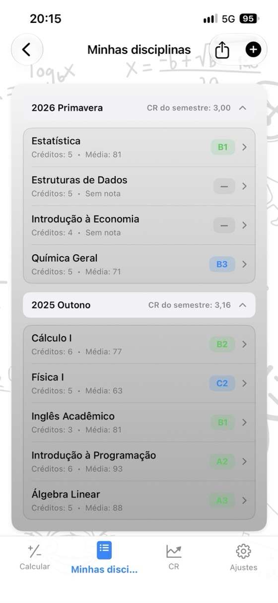
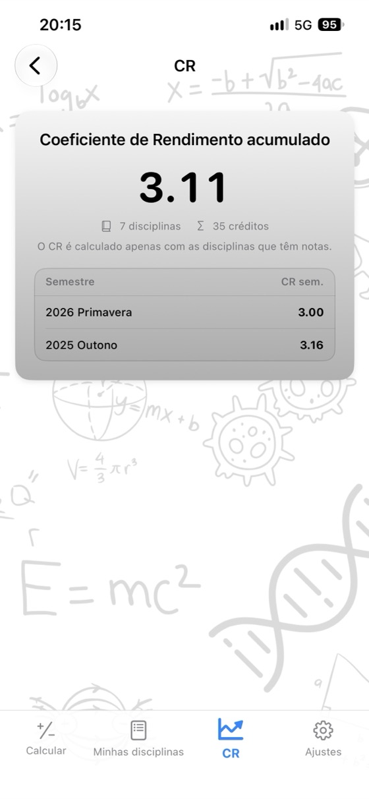
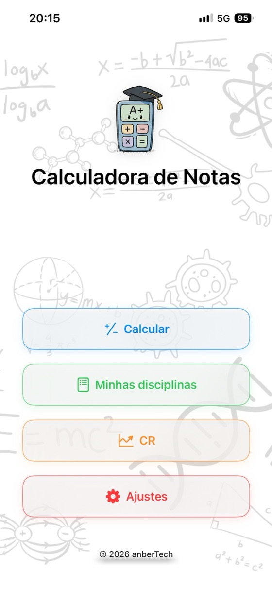
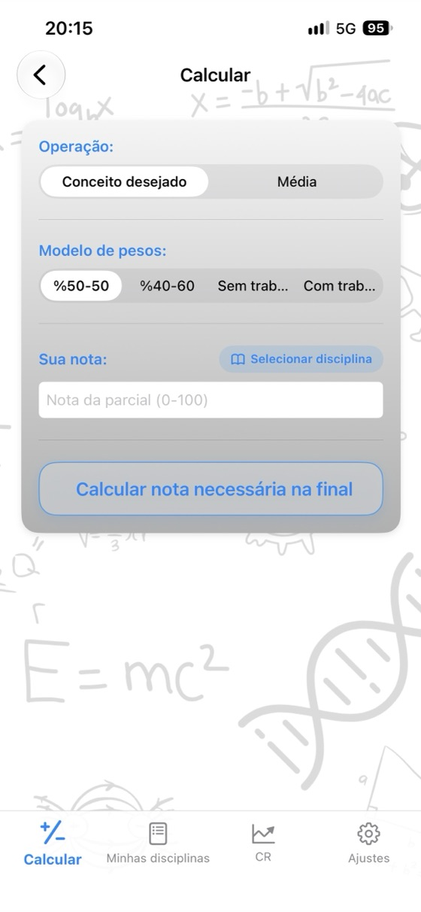
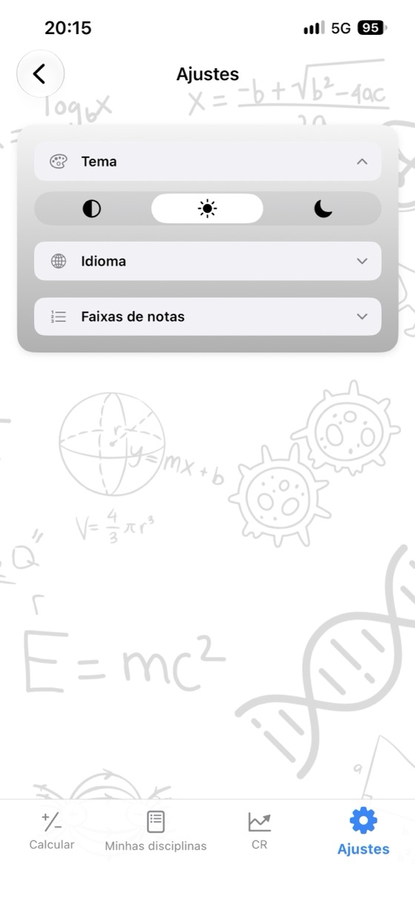

Saiba sua nota,
planeje seu futuro.
Média da disciplina, nota necessária na prova final e GPA (CR) em um só app. Sem anúncios, sem conta e totalmente offline.
- ✓ Grátis
- ✓ Sem anúncios
- ✓ Sem conta
- ✓ Offline


Calcule agora
Experimente aqui antes de baixar o app. Altere os valores e veja o resultado ser atualizado na hora.
Peso da prova final: 60%
Peso da prova final: 60%
Calculadoras grátis
Use diretamente no navegador, sem baixar nada. Não é preciso criar conta, e as notas informadas nunca saem do seu dispositivo.
Por que usar a Calculadora de Notas?
Média da disciplina
Informe as notas e os pesos da parcial, da final e do trabalho para ver na hora sua média ponderada e sua letra.
Final necessária
Veja em uma única tela a nota mínima necessária na prova final para cada letra.
Acompanhamento do CR
Salve suas disciplinas por semestre; o CR do semestre e o Coeficiente de Rendimento acumulado são atualizados automaticamente.
Sua própria escala de notas
Edite as faixas de letras e os pontos para usar exatamente o sistema da sua instituição.
Relatório de notas em PDF
Compartilhe suas disciplinas e sua média em PDF com um toque.
17 idiomas
Inglês, espanhol, alemão, japonês, árabe, turco e muito mais.
Privacidade em primeiro lugar
Sem conta, anúncios ou rastreamento. Seus dados ficam no seu dispositivo.
Funciona offline
Não precisa de internet: use durante a semana de provas, na biblioteca ou onde quiser.
Conheça o app



Perguntas frequentes
Como calcular a média da disciplina?
Multiplique cada nota pelo respectivo peso e some os resultados. Com uma parcial de 40% e uma final de 60%: média = parcial × 0,40 + final × 0,60. Uma parcial de 62 e uma final de 75 resultam em 62 × 0,40 + 75 × 0,60 = 69,8. Se houver um trabalho, some também sua nota ponderada; os pesos devem totalizar 100%.
Quanto preciso tirar na prova final para passar?
Final necessária = (média desejada − parcial × peso da parcial) ÷ peso da final. Com uma parcial de 55 valendo 40% e média mínima de 50: (50 − 22) ÷ 0,60 = 46,7, então você precisa tirar pelo menos 47 na final. A Calculadora de Notas faz essa conta de uma só vez para todas as letras.
Como o GPA (CR) é calculado?
Multiplique os pontos de cada disciplina (A = 4,0, B = 3,0 …) pelos créditos, some os resultados e divida pelo total de créditos. O resultado é seu GPA, ou CR, em uma escala de 4,0.
As faixas de letras são iguais em todos os lugares?
Não. As faixas e os pontos variam entre países, universidades e até disciplinas. No app, você pode editar a escala de notas para deixá-la exatamente igual à sua.
O que é a nota mínima na final?
Algumas instituições reprovam o aluno quando a nota da prova final fica abaixo de um valor determinado, como 30, 45 ou 50, mesmo que a média seja suficiente. Informe esse mínimo, e o cálculo da final necessária levará essa regra em conta.
A Calculadora de Notas é grátis?
Sim. O app é grátis na App Store, sem anúncios, assinatura ou compras no app. As calculadoras deste site também são grátis.
Onde minhas notas ficam armazenadas?
Somente no seu dispositivo. Você não precisa de uma conta, e nada é enviado a um servidor. As notas digitadas nas calculadoras da web nunca saem do navegador.
Existe uma versão para Android?
A versão para Android chegará em breve ao Google Play. No momento, o app está disponível na App Store para iPhone e iPad com iOS 17.6 ou posterior.
Acompanhe todas as suas disciplinas em um só lugar
Grátis. Sem anúncios. Sem conta.